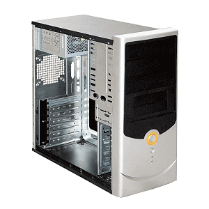

Składamy komputer. Wybieramy obudowę.
Obudowa komputera to nie tylko design, ale również funkcjonalność. Wszystko o obudowach PC, jak dobrać odpowiednią obudowę.

Aby powrócić kliknij baner.
Obudowa jest podzespołem, który najczęściej jest traktowany po macoszemu. A jest to błąd! Nie wolno lekceważyć wpływu obudowy na działanie komputera, mimo że nie ma ona bezpośredniego wpływu na wydajność jak procesor czy karta graficzna. Dobra obudowa powinna zapewniać dużo miejsca na okablowanie, udogodnienia pozwalające na odpowiednie ich ułożenie – w ten sposób nie będą przeszkadzały oraz nie będą zaburzać cyrkulacji powietrza, powinna również zapewniać odpowiednią wentylację. Popularna „buda” często jest bagatelizowana, przez co gotujemy podzespołom za setki złotych ciężki los, skazując je na męczarnie w ścisku i iście piekielnych temperaturach.
Rozmiary obudów.
Najbardziej popularnym „typem” obudów, są te oznaczone jako tower. Występują one w trzech wariantach:
Oprócz typu tower istnieją inne, mniej popularne, np. desktop – dla komputerów biurowych, na których zazwyczaj stawia się monitory, albo slim tower, która jest o wiele węższa od typowych obudów z rodziny tower.
- Mini Tower – umożliwiająca montaż płyty głównej w formacie mATX;
- Midi Tower – umożliwiająca montaż płyty głównej w formacie ATX;
- Big Tower – umożliwiająca montaż płyty głównej w formacie ATX i dodatkowo zapewniająca dużo wolnej przestrzeni na dyski, napędy, okablowanie lub dodatkowe chłodzenie;
Oprócz typu tower istnieją inne, mniej popularne, np. desktop – dla komputerów biurowych, na których zazwyczaj stawia się monitory, albo slim tower, która jest o wiele węższa od typowych obudów z rodziny tower.
Czym się kierować przy zakupie obudowy?
- Odpowiednia ilość miejsca na podzespoły. Możliwa jest sytuacja, że długa karta graficzna po prostu nie zmieści się do obudowy. Należy zwrócić na to szczególną uwagę;
- „Wloty” na okablowanie. Są bardzo przydatnym elementem, pozwalają pochować zbędne, wystające przewody, nie tylko poprawiając estetykę, ale również cyrkulację powietrza, co ma bezpośredni wpływ na temperatury;
- Dodatkowe wentylatory. Również ważny element, im więcej wentylatorów – tym lepiej. Również im większa ich średnica (widełki to 80-120mm) tym lepiej. Najtańsze rozwiązania rzadko kiedy mają w zestawie takie udogodnienie, a to duża strata;
- Złącza na przednim panelu. Bywają bardzo pomocne, warto zwrócić uwagę na to, czy interesujący nas model oferuje odpowiednią ilość złącz USB, najlepiej w wersji 3.0. Również wyjścia audio i kontroler do sterowania wentylatorami byłyby nie od rzeczy;
- Design, marka i użyte materiały. Może wydaje się to banalne, lecz często idące ze sobą w parze połączenie design-marka-wykonanie też jest istotne. Budżetowi producenci wykorzystują do produkcji cienkie stopy metali, które gną się i łamią przy montażu i demontażu podzespołów;
- Cena. Budżet na obudowę powinien być proporcjonalny do budżetu na cały komputer. Nieoptymalnie jest wydawać setki złotych na opakowanie, jeżeli w środku znajdują się tanie podzespoły. Analogicznie złym pomysłem jest pakowanie sprzętu wartego tysiące złotych do obudowy za 50PLN. W ogóle odradzam trzymania się bardzo tanich egzemplarzy, kiepskich producentów. Absolutnym minimum, którego radzę się trzymać są obudowy takie jak: SilentiumPC Brutus S30 albo Zalman T3. Obie kosztują około 100 złotych, a zapewniają zdecydowanie lepszy stosunek jakości do ceny, niż ich dwukrotnie tańsze odpowiedniki.
7.Obudowa
